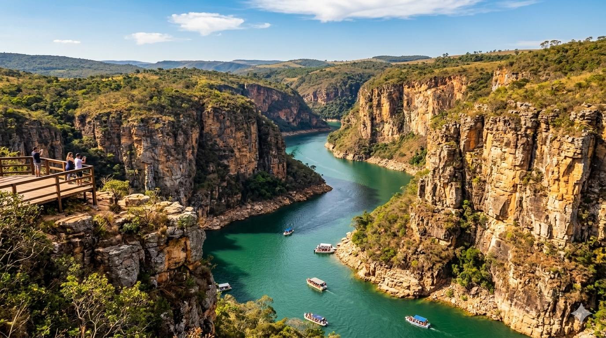
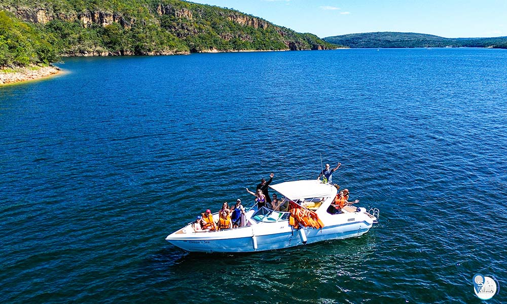

Cânions de Furnas
Principal atração turística de Capitólio, famosa pelas enormes formações rochosas cercadas por águas cristalinas.
Natureza, aventura e paisagens incríveis no mar de Minas
Capitólio é um dos destinos turísticos mais procurados de Minas Gerais, famoso pelas suas paisagens naturais, cachoeiras, cânions e pelo incrível Lago de Furnas, conhecido como o “Mar de Minas”.
A cidade atrai turistas que procuram aventura, contato com a natureza, esportes aquáticos e momentos de lazer em meio a belas paisagens.

Capitólio se tornou um dos maiores destinos de ecoturismo do Brasil, oferecendo mirantes, trilhas, cachoeiras e passeios de lancha.
O Lago de Furnas possui uma das maiores extensões de água do Brasil e recebeu o apelido de “Mar de Minas”.

Principal atração turística de Capitólio, famosa pelas enormes formações rochosas cercadas por águas cristalinas.
Grande lago artificial utilizado para passeios de lancha, esportes aquáticos e turismo de lazer.
Cachoeira muito visitada pelos turistas devido às águas claras e belas paisagens naturais.
Local perfeito para observar a paisagem natural e tirar fotos incríveis da região.
Capitólio oferece diversas trilhas em meio à natureza, com acesso a cachoeiras e mirantes.
Capitólio é ideal para quem gosta de aventura e atividades ao ar livre.

Além das paisagens naturais, Capitólio também oferece restaurantes com comidas típicas mineiras e culinária regional.
| Prato típico | Destaque |
|---|---|
| Feijão tropeiro | Tradicional da culinária mineira |
| Pescados | Pratos próximos ao Lago de Furnas |
| Pão de queijo | Marca registrada de Minas Gerais |
| Doces caseiros | Sabores tradicionais mineiros |
Os turistas encontram lojas e feiras com produtos artesanais e lembranças da região.
| Informação | Detalhe |
|---|---|
| Estado | Minas Gerais |
| Tipo de turismo | Natureza, aventura e lazer |
| Principal destaque | Cânions de Furnas |
| Melhor experiência | Passeios de lancha e cachoeiras |
“Capitólio impressiona turistas com suas águas cristalinas, cânions gigantes e paisagens naturais inesquecíveis.”